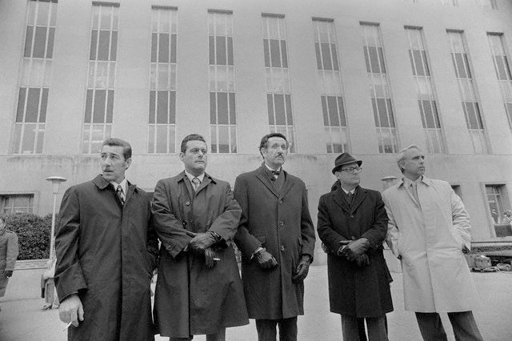
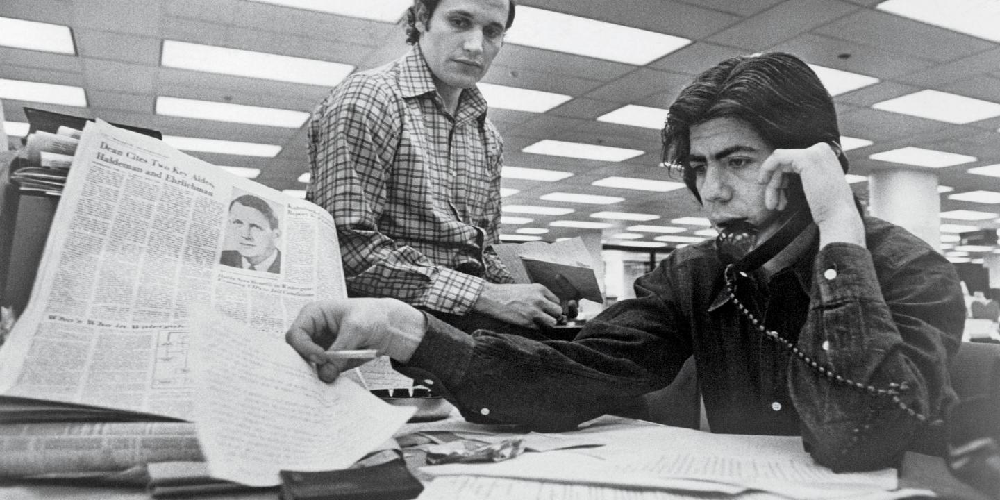
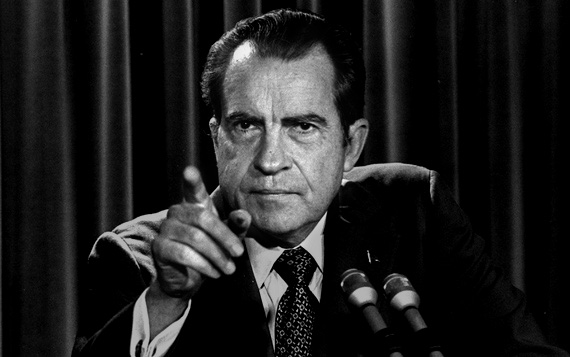

What happened during Watergate?
Watergate was a major political scandal that occurred in the United States in the 1970s, following a break-in at the Democratic National Committee (DNC) headquarters at the Watergate office complex in Washington, D.C. in 1972 and President Richard Nixon's administration's attempted cover-up of its involvement. When the conspiracy was discovered and investigated by the U.S. Congress, the Nixon administration's resistance to its probes led to a constitutional crisis.
The term Watergate, by metonymy, has come to encompass an array of clandestine and often illegal activities undertaken by members of the Nixon administration. Those activities included such "dirty tricks" as bugging the offices of political opponents and people of whom Nixon or his officials were suspicious. Nixon and his close aides also ordered investigations of activist groups and political figures, using the Federal Bureau of Investigation (FBI), the Central Intelligence Agency (CIA), and the Internal Revenue Service (IRS).
Explore the history
The Burglars
The 5 burglars who orchestrated the crime and broke the constitution.
Deep Throat
Pseudonym given to the secret informant who provided information to Bob Woodward and Carl Bernstein.
Nixon Resignation
Why Nixon choose resignation as opposed to impeachment during this tumultuous time.
The Break In
A picture of the Watergate Hotel, where the infamous scandal took place.
Early in the morning of June 17, 1972, several burglars were arrested inside the office of the Democratic National Committee (DNC), located in the Watergate building in Washington, D.C. This was no ordinary robbery: The prowlers were connected to President Richard Nixon’s reelection campaign, and they had been caught while attempting to wiretap phones and steal secret documents. While historians are not sure whether Nixon knew about the Watergate espionage operation before it happened, he took steps to cover it up afterwards, raising “hush money” for the burglars, trying to stop the Federal Bureau of Investigation (FBI) from investigating the crime, destroying evidence and firing uncooperative staff members. In August 1974, after his role in the Watergate conspiracy had finally come to light, the president resigned. His successor, Gerald Ford, immediately pardoned Nixon for all the crimes he “committed or may have committed” while in office. Although Nixon was never prosecuted, the Watergate scandal changed American politics forever, leading many Americans to question their leadership and think more critically about the presidency.
Media

Nixon says farewell

Chuck Colston, political strategist

Frost interviews Nixon

White House Counsel

US v. Nixon